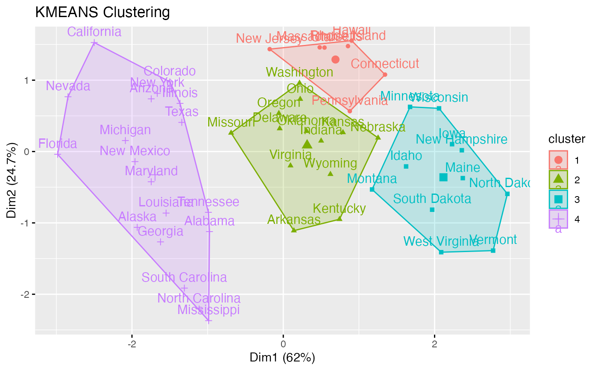
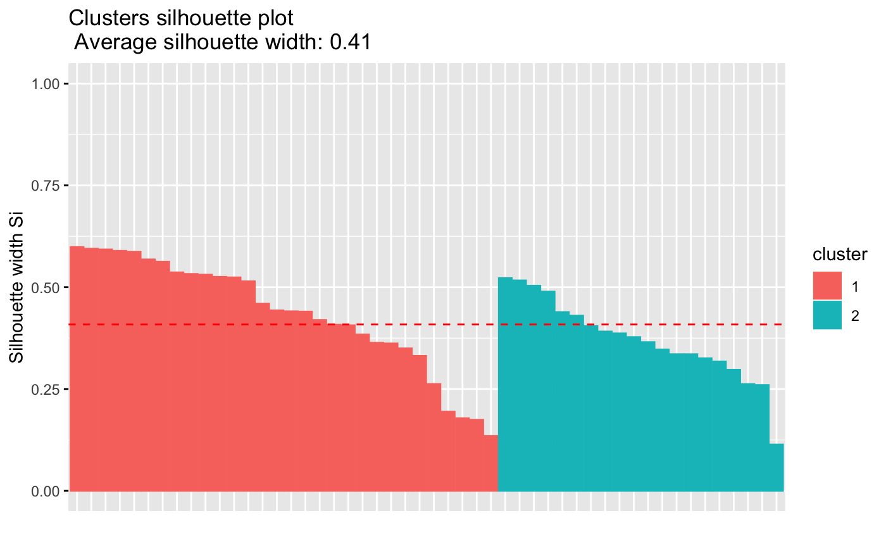

eclust.RdProvides solution for enhancing the workflow of clustering analyses and ggplot2-based elegant data visualization. Read more: Visual enhancement of clustering analysis.
eclust(x, FUNcluster = c("kmeans", "pam", "clara", "fanny", "hclust", "agnes", "diana"), k = NULL, k.max = 10, stand = FALSE, graph = TRUE, hc_metric = "euclidean", hc_method = "ward.D2", gap_maxSE = list(method = "firstSEmax", SE.factor = 1), nboot = 100, verbose = interactive(), seed = 123, ...)
| x | numeric vector, data matrix or data frame |
|---|---|
| FUNcluster | a clustering function including "kmeans", "pam", "clara", "fanny", "hclust", "agnes" and "diana". Abbreviation is allowed. |
| k | the number of clusters to be generated. If NULL, the gap statistic is used to estimate the appropriate number of clusters. In the case of kmeans, k can be either the number of clusters, or a set of initial (distinct) cluster centers. |
| k.max | the maximum number of clusters to consider, must be at least two. |
| stand | logical value; default is FALSE. If TRUE, then the data will be standardized using the function scale(). Measurements are standardized for each variable (column), by subtracting the variable's mean value and dividing by the variable's standard deviation. |
| graph | logical value. If TRUE, cluster plot is displayed. |
| hc_metric | character string specifying the metric to be used for calculating dissimilarities between observations. Allowed values are those accepted by the function dist() [including "euclidean", "manhattan", "maximum", "canberra", "binary", "minkowski"] and correlation based distance measures ["pearson", "spearman" or "kendall"]. Used only when FUNcluster is a hierarchical clustering function such as one of "hclust", "agnes" or "diana". |
| hc_method | the agglomeration method to be used (?hclust): "ward.D", "ward.D2", "single", "complete", "average", ... |
| gap_maxSE | a list containing the parameters (method and SE.factor) for determining the location of the maximum of the gap statistic (Read the documentation ?cluster::maxSE). |
| nboot | integer, number of Monte Carlo ("bootstrap") samples. Used only for determining the number of clusters using gap statistic. |
| verbose | logical value. If TRUE, the result of progress is printed. |
| seed | integer used for seeding the random number generator. |
| ... | other arguments to be passed to FUNcluster. |
Returns an object of class "eclust" containing the result of the standard function used (e.g., kmeans, pam, hclust, agnes, diana, etc.).
It includes also:
cluster: the cluster assignement of observations after cutting the tree
nbclust: the number of clusters
silinfo: the silhouette information of observations, including $widths (silhouette width values of each observation), $clus.avg.widths (average silhouette width of each cluster) and $avg.width (average width of all clusters)
size: the size of clusters
data: a matrix containing the original or the standardized data (if stand = TRUE)
The "eclust" class has method for fviz_silhouette(), fviz_dend(), fviz_cluster().
# Load and scale data data("USArrests") df <- scale(USArrests) # Enhanced k-means clustering # nboot >= 500 is recommended res.km <- eclust(df, "kmeans", nboot = 2)#> cluster size ave.sil.width #> 1 1 30 0.43 #> 2 2 20 0.37# Optimal number of clusters using gap statistics res.km$nbclust#> [1] 2# Print result res.km#> K-means clustering with 2 clusters of sizes 30, 20 #> #> Cluster means: #> Murder Assault UrbanPop Rape #> 1 -0.669956 -0.6758849 -0.1317235 -0.5646433 #> 2 1.004934 1.0138274 0.1975853 0.8469650 #> #> Clustering vector: #> Alabama Alaska Arizona Arkansas California #> 2 2 2 1 2 #> Colorado Connecticut Delaware Florida Georgia #> 2 1 1 2 2 #> Hawaii Idaho Illinois Indiana Iowa #> 1 1 2 1 1 #> Kansas Kentucky Louisiana Maine Maryland #> 1 1 2 1 2 #> Massachusetts Michigan Minnesota Mississippi Missouri #> 1 2 1 2 2 #> Montana Nebraska Nevada New Hampshire New Jersey #> 1 1 2 1 1 #> New Mexico New York North Carolina North Dakota Ohio #> 2 2 2 1 1 #> Oklahoma Oregon Pennsylvania Rhode Island South Carolina #> 1 1 1 1 2 #> South Dakota Tennessee Texas Utah Vermont #> 1 2 2 1 1 #> Virginia Washington West Virginia Wisconsin Wyoming #> 1 1 1 1 1 #> #> Within cluster sum of squares by cluster: #> [1] 56.11445 46.74796 #> (between_SS / total_SS = 47.5 %) #> #> Available components: #> #> [1] "cluster" "centers" "totss" "withinss" "tot.withinss" #> [6] "betweenss" "size" "iter" "ifault" "clust_plot" #> [11] "silinfo" "nbclust" "data" "gap_stat"if (FALSE) { # Enhanced hierarchical clustering res.hc <- eclust(df, "hclust", nboot = 2) # compute hclust fviz_dend(res.hc) # dendrogam fviz_silhouette(res.hc) # silhouette plot }